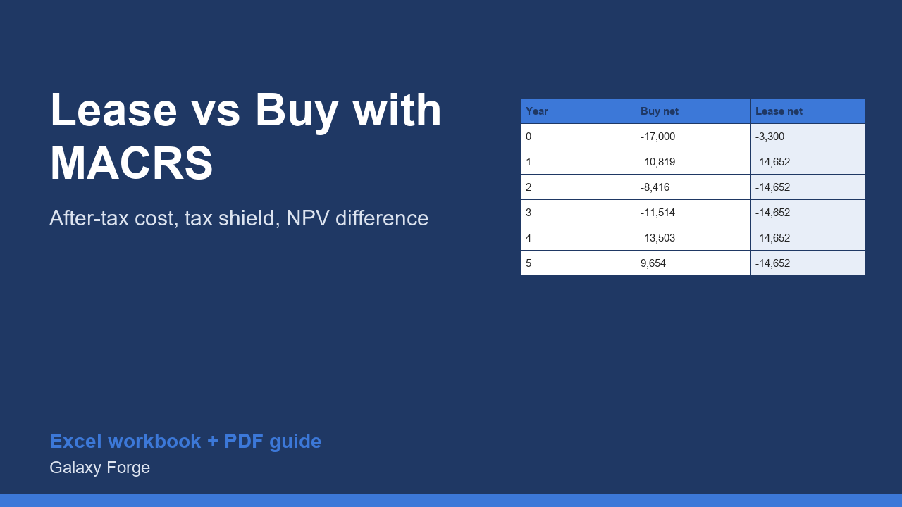

Compare buying with a loan against leasing the same equipment over five years, after tax, with MACRS depreciation, interest deductions, resale proceeds and recapture, discounted to today's money.
Buying equipment with a loan and leasing the same equipment have very different cash flows and very different tax effects. The monthly payment is not the comparison: what matters is what each choice costs after tax, over the same period, in today's money.
This model puts both options on a year-by-year table. For buying it follows the down payment, loan payments split into interest and principal, MACRS depreciation (with an optional first-year expensing share), the tax saved by interest and depreciation, and what you net when you sell, after repaying the loan and paying tax on the sale. For leasing it follows the upfront payment and the monthly payments, which are deductible.
Both streams are discounted at the rate you choose and added up, so the Summary can say which option is cheaper and by how much.
1) On Inputs enter the equipment price, loan terms, your marginal tax rate, expected resale value after five years, the lease terms and your discount rate. 2) Confirm the MACRS percentages for your asset class against IRS Publication 946 (the 5-year table is pre-filled). 3) If you expect to expense part of the price in year 1 (Section 179 or bonus), enter that share. 4) Read Summary: the after-tax present cost of each option and the difference.
Price: $39, one-time. Download: equipment_lease_vs_buy_macrs_model.xlsx (Inputs, Years, Summary) and this guide. Works in Excel 2016 or later, Excel for Mac and Excel on the web; opens in Google Sheets and LibreOffice.
New product, listed 2026-11-05: no sales or reviews yet. Example figures in the workbook are illustrative.
This workbook is a calculation tool, not tax, legal or financial advice. Depreciation rules, Section 179 and bonus limits, state treatment and lease classification change and depend on your situation; the MACRS table must be checked against current IRS Publication 946 and your accountant must confirm the treatment for your business.